Place inline images and fit
Script for InDesign: written in 2021 by Kasyan. Version 3.1
The original idea belongs to Peter Kahrel who posted his (simple) place inline images script on the Adobe scripting forum. I developed his approach further and made a few much more complex scripts. One of them was even written about in InDesign Magazine: issue #149, page 55.
About a year ago I wrote this script at a client’s request, and now I worked further on it adding new features.
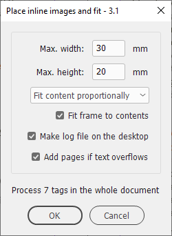
When you run the script, a dialog box appears where you can set the maximum dimensions of the images (in the current document measurement units) before placing them and fit the images using one of the following options:
- Use frame fitting options
- Center content
- Content-aware fit
- Fit content to frame
- Fill frame proportionally
- Fit content proportionally
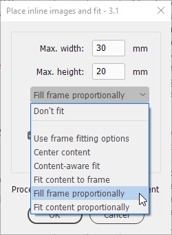
Select some text or a text frame to process only this selection; otherwise, the whole document will be processed.
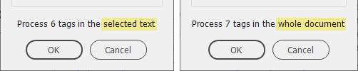
The script gives a warning in the dialog box about how many tags are about to be replaced with images. With a great number, it may take too long to process the whole document so you may prefer to hit Cancel and process it in a few goes: selecting parts of the text.
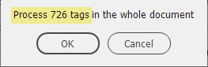
Next you have to choose a folder where the images to be placed are located:
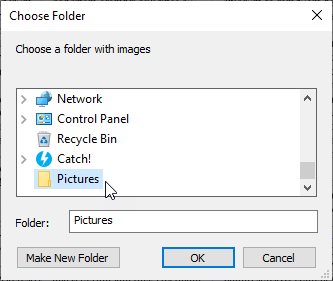
Image types (extensions) available for placing:
- jp(e)g
- psd
- png
- gif
- ai
- eps
- bmp
- tif(f)
The Fit frame to contents option is available only when Fill / fit frame proportionally is selected, as an extra step. For example:
Fit frame to contents is OFF
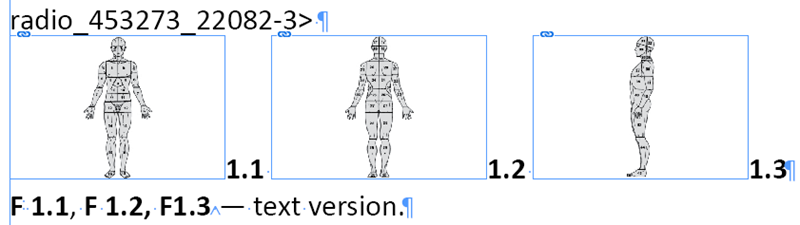
Fit frame to contents is ON
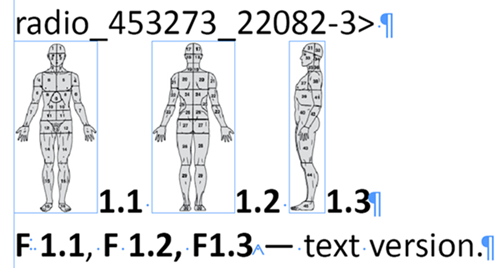
The script can make a log file on the desktop. If no images are found for some tags, they will be listed in the report created on the desktop:
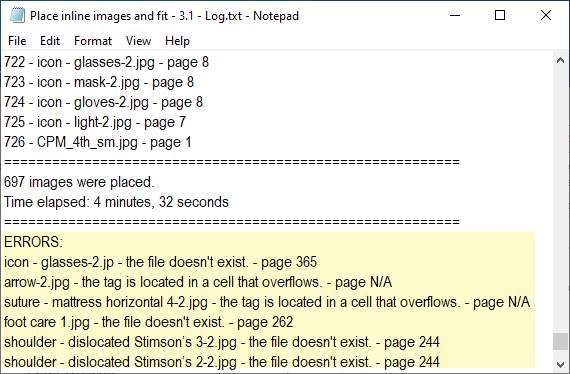
The script can also add as many as necessary pages if the text overflows at the end of the document (I mean the main text flow).
Example of using:
Before
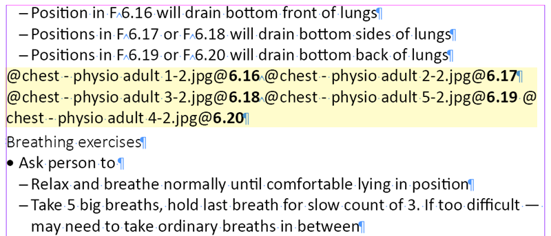
After
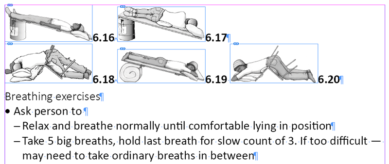
Pictures in tables
In the client’s book, some tags were located in tables. Replacing them with illustrations was problematic because the tables were originally too small with cells overflown.
For example, here is the original table:
To solve this problem I wrote this simple Set tables script that makes all tables in the current document 180 mm wide, rows 4 mm high, and applies the text in tables paragraph style to the text in cells. (Assuming that current ruler units are set to millimeters). This script should be run before the Place inline images and fit.
Here’s this table after running the Set tables script:
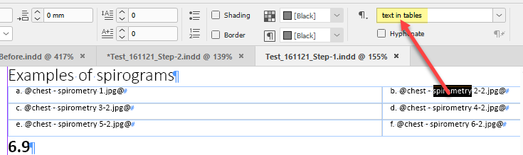
And finally here’s the same table after running the Place inline images and fit script:
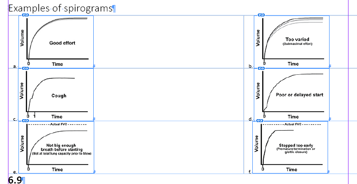
If you want to use this script, make sure to make edits according to your requirements (read the comments):
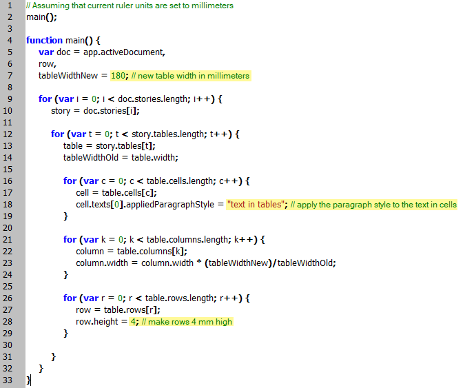
You can undo/redo the whole script:
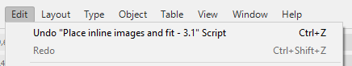
As I’ve already mentioned above, the script uses the current document measurement units. As in InDesign, you can have different units for horizontal and vertical rulers (width and height).
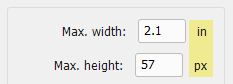
The script saves and restores chosen values in the Max. width/height fields for each available unit separately. I did this to avoid problems with units that differ drastically. For example, 20x30 is fine in millimeters but would be too much if the user uses inches.
If you found my scripts useful and want me to develop more free scripts, consider supporting me by donating via PayPal directly to my e-mail: askoldich [at] yahoo [dot] com. (Due to PayPal's restrictions for Ukraine, I can't have a Donate button on my site.)
Click here to download the latest version of the script. (The previous version 2.0 is here.)
See also similar scripts: